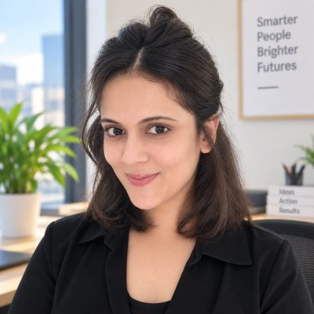

Doctoral Researcher
Laboratoire d'informatique formelle · Quebec, Canada
September 2024 — Present

Data Science · Research · Machine Learning
Data Scientist & Researcher | Fully Funded PhD Candidate in Computer Science, UQAC | Machine Learning | Python | SQL | PySpark | Ex-HCLTech, Orange Telecom | Academic Excellence Award 🏆
She/Her · Based in Canada · Open to Data Scientist, Data Analyst, Machine Learning, and AI/Data opportunities across Canada.
01 / Profile
I am a Computer Science PhD candidate at Université du Québec à Chicoutimi (UQAC) with experience in data science, machine learning, software engineering, and data-driven analysis.
My work combines Python, SQL, PySpark, machine learning, Azure, and data analytics to analyze complex datasets, develop scalable solutions, and generate actionable insights. My PhD research focuses on program analysis and extracting insights from large-scale real-world software repositories.
Previously, I worked at HCLTech and Orange Telecom, gaining industry experience in data analysis, enterprise technology, software systems, testing, and process improvement.
02 / Career
Laboratoire d'informatique formelle · Quebec, Canada
September 2024 — Present
HCLTech · Full-time · India
January 2022 — November 2024
Orange · Internship · Nantes, France
March 2019 — August 2019
03 / Education
Doctor of Philosophy (PhD), Computer Science
November 2024 — April 2027
GPA: 3.85 / 4.0 · Fully International Graduate Scholarship
Master of Science (MS), Embedded System Engineer
04 / Community
HCLTech
February 2024 — November 2024
Orange
April 2019 — June 2019
Helped organize a customer event with colleagues from different teams, supported idea sharing related to network projects, and attended a customer service seminar.
05 / Selected work
Explore my data science and analytics projects on GitHub. Each project includes its problem statement, approach, implementation, and findings.
Uses synthetic AMLSim transactions to validate data quality, engineer historical behavior features, compare monitoring rules and ML approaches, and explore account-network patterns.
Uses synthetic PaySim transactions, DuckDB, and scikit-learn to compare an existing fraud flag with a candidate model and evaluate fraud capture against alert volume.
06 / Get in touch
Open to Data Scientist, Data Analyst, Machine Learning, and AI/Data opportunities across Canada.